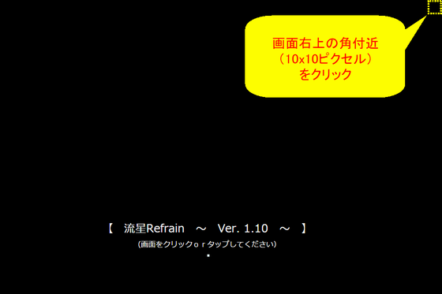
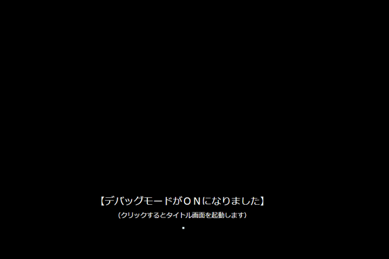
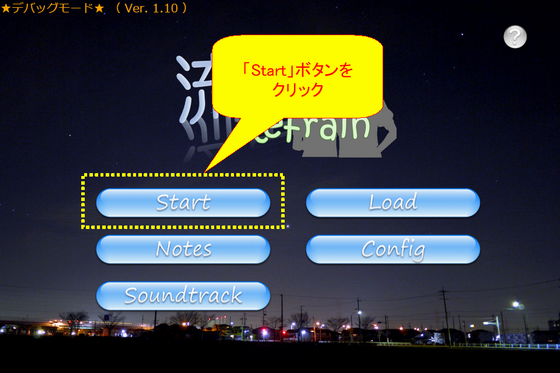
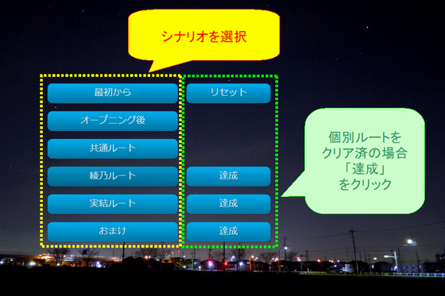

|
ゲームのアップデートに伴い、旧Ver.のセーブデータから シナリオを再開すると、途中で不具合が確認されています。 大変申し訳ございません。 |
|
以下の方法で、任意の時点からシナリオを開始することが 可能となります。 恐れ入りますが、よろしくお願いいたします。 |
■ デバッグモードの入り方 ■

|
ゲーム起動時のいバージョン表示画面で、 画面右上の角（10x10ピクセル）付近を クリックしてください。 |

|
成功すると、上記の表示ができます。 （画面をクリックして進んでください） |
■ デバッグメニューの使用方法 ■

|
トップ画面が表示されたら、 「Start」ボタンをクリックしてください。 |

|
デバッグメニュー（目次）が表示されます。 以下を参考に、シナリオを選択してください。 |
|
共通ルート…本編9/25～10/30のシナリオ |
|
綾乃ルート…本編10/30～の個別シナリオ |
|
実結ルート…本編10/30～の個別シナリオ |
|
おまけ … ？？？ |

|
各シナリオの日付が表示されます。 開始したい日付を選択してください。 選択した日の朝からシナリオを開始します。 |
■ デバッグモードの解除方法 ■
|
デバッグモードは、アプリの再起動で解除されます。 ゲームを終了して、一旦アプリを閉じてください。 （ブラウザ版の方は、ページを閉じてください） もう一度起動すると、通常モードで起動します。 |